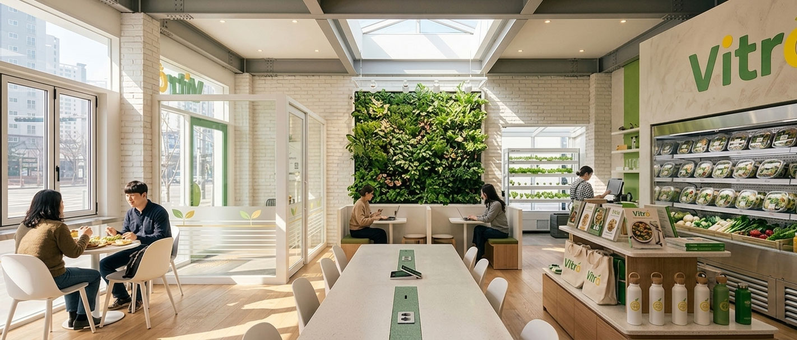

자연의 한 그릇을 담다
DAILY FRESH
VITRA는 신선한 재료로 일상 속 건강한 식사를 만듭니다
A Balance of Health & Taste
건강과 맛의 균형을 담은 기억에 남는 한 그릇

PURE
NATURAL
WHOLESOME
VITRA는 건강과 맛의 균형을 담아 일상 속에서 자연스럽게 이어지는 식사를 전합니다.
신선한 채소와 다양한 식재료를 바탕으로건강한 식사를 만듭니다.자극적이지 않은 재료와 자연스러운 조합으로가볍고 편안한 식사를 완성합니다.
엄선된 재료와 균형 잡힌 구성으로몸에 필요한 영양을 담은 식사를 만듭니다.채소와 곡물, 단백질이 어우러진 식단으로건강한 식사를 경험할 수 있도록 합니다.
자연 그대로의 신선함을 담아 건강하고 담백한 식사를 완성합니다.다양한 재료의 조화를 통해일상 속에서 부담 없이 즐길 수 있는 식사를 만듭니다.